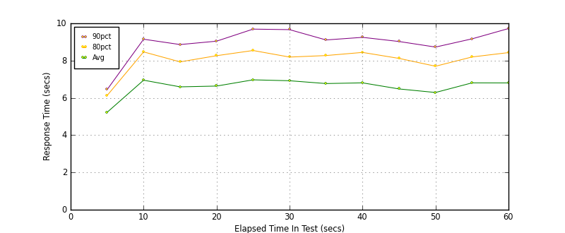
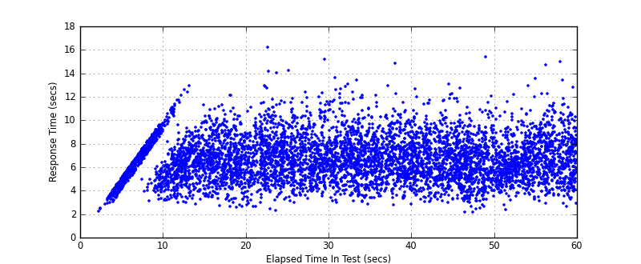
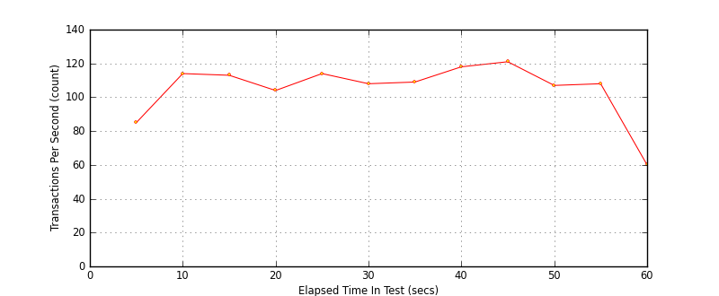

Performance Results Report
Summary
transactions: 7081
errors: 0
run time: 60 secs
rampup: 0 secs
test start: 2017-05-24 19:11:45
test finish: 2017-05-24 19:12:43
time-series interval: 5 secs
workload configuration:
| group name | threads | script name |
|---|
| user_group-21 | 30 | redis_stress.py |
| user_group-20 | 30 | redis_stress.py |
| user_group-23 | 30 | redis_stress.py |
| user_group-22 | 30 | redis_stress.py |
| user_group-25 | 30 | redis_stress.py |
| user_group-24 | 30 | redis_stress.py |
| user_group-2 | 30 | redis_stress.py |
| user_group-3 | 30 | redis_stress.py |
| user_group-1 | 30 | redis_stress.py |
| user_group-6 | 30 | redis_stress.py |
| user_group-7 | 30 | redis_stress.py |
| user_group-4 | 30 | redis_stress.py |
| user_group-5 | 30 | redis_stress.py |
| user_group-8 | 30 | redis_stress.py |
| user_group-9 | 30 | redis_stress.py |
| user_group-10 | 30 | redis_stress.py |
| user_group-11 | 30 | redis_stress.py |
| user_group-12 | 30 | redis_stress.py |
| user_group-13 | 30 | redis_stress.py |
| user_group-14 | 30 | redis_stress.py |
| user_group-15 | 30 | redis_stress.py |
| user_group-16 | 30 | redis_stress.py |
| user_group-17 | 30 | redis_stress.py |
| user_group-18 | 30 | redis_stress.py |
| user_group-19 | 30 | redis_stress.py |
All Transactions
Transaction Response Summary (secs)
| count | min | avg | 80pct | 90pct | 95pct | max | stdev |
|---|
| 7081 | 2.144 | 6.624 | 8.119 | 9.061 | 9.883 | 16.220 | 1.866 |
Interval Details (secs)
| interval | count | rate | min | avg | 80pct | 90pct | 95pct | max | stdev |
|---|
| 1 | 426 | 85.20 | 2.195 | 5.224 | 6.125 | 6.441 | 6.759 | 7.236 | 0.990 |
| 2 | 574 | 114.80 | 2.935 | 6.948 | 8.466 | 9.146 | 9.694 | 12.131 | 1.812 |
| 3 | 567 | 113.40 | 2.690 | 6.590 | 7.930 | 8.860 | 9.500 | 12.904 | 1.694 |
| 4 | 521 | 104.20 | 2.543 | 6.633 | 8.262 | 9.042 | 9.642 | 12.907 | 1.848 |
| 5 | 570 | 114.00 | 2.316 | 6.967 | 8.541 | 9.688 | 10.357 | 16.220 | 2.018 |
| 6 | 542 | 108.40 | 2.953 | 6.918 | 8.189 | 9.660 | 10.763 | 15.166 | 1.963 |
| 7 | 549 | 109.80 | 2.823 | 6.767 | 8.270 | 9.107 | 10.071 | 13.429 | 1.864 |
| 8 | 594 | 118.80 | 2.756 | 6.805 | 8.438 | 9.246 | 9.872 | 14.822 | 1.828 |
| 9 | 609 | 121.80 | 2.179 | 6.479 | 8.117 | 9.024 | 9.708 | 13.036 | 1.891 |
| 10 | 538 | 107.60 | 2.144 | 6.288 | 7.697 | 8.725 | 9.364 | 15.350 | 1.792 |
| 11 | 541 | 108.20 | 2.911 | 6.805 | 8.194 | 9.166 | 9.798 | 14.714 | 1.821 |
| 12 | 300 | 60.00 | 2.617 | 6.802 | 8.428 | 9.718 | 10.387 | 14.993 | 2.034 |
Graphs
Response Time: 5 sec time-series

Response Time: raw data (all points)

Throughput: 5 sec time-series
